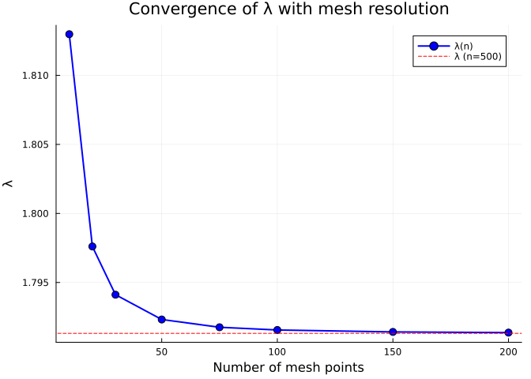
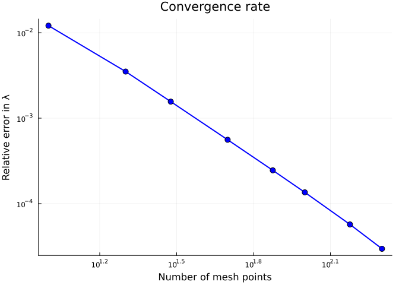
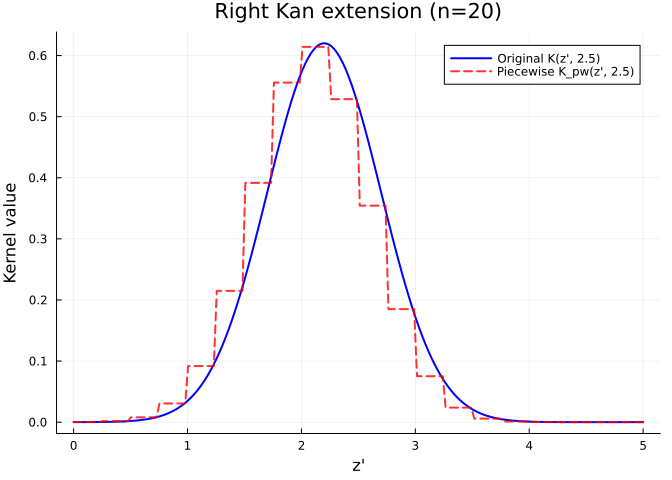
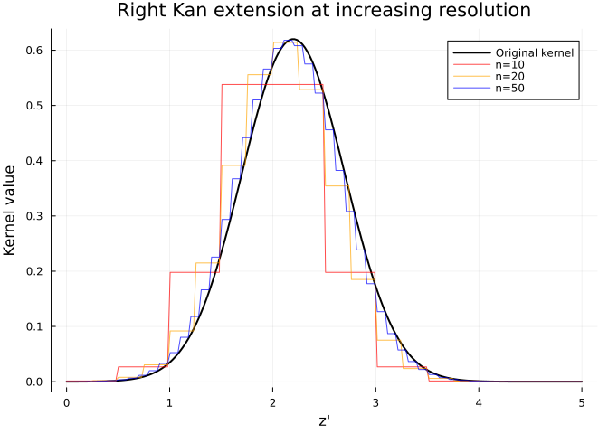
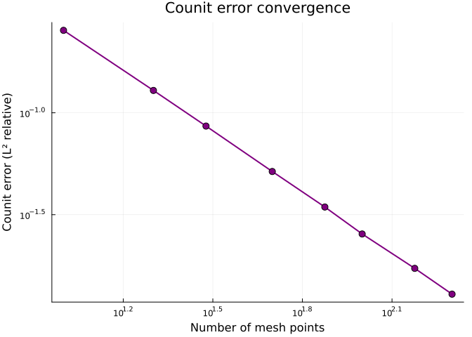
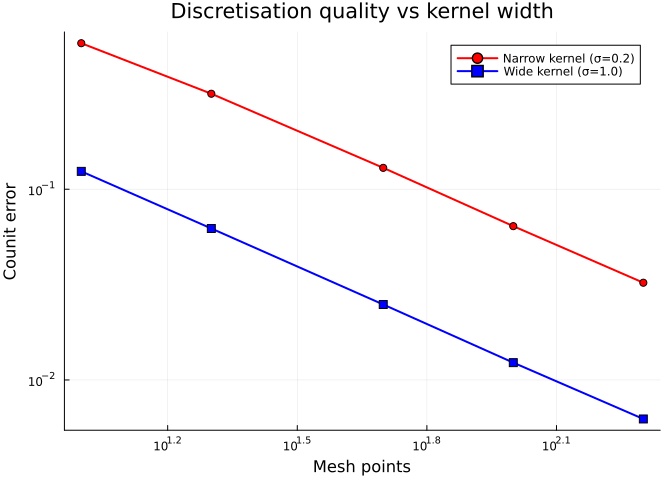

Kan Extensions and the IPM-MPM Adjunction
Simon Frost
Overview
The mathematical heart of CategoricalPopulationDynamics.jl is the adjunction chain between continuous kernels (IPMs) and discrete matrices (MPMs):
\[\text{Lan}_D \dashv D^* \dashv \text{Ran}_D\]
- Left Kan extension ($\text{Lan}_D$): discretise kernel → matrix (IPM → MPM)
- Restriction ($D^*$): evaluate a kernel at mesh points
- Right Kan extension ($\text{Ran}_D$): refine matrix → piecewise kernel (MPM → IPM)
This adjunction gives us round-trip diagnostics: the unit $\eta$ and counit $\varepsilon$ measure how much information is lost when moving between representations. This vignette explores convergence, diagnostics, and the practical implications for choosing mesh resolution.
Setup
using CategoricalPopulationDynamics
using LinearAlgebra
using StructuredPopulationCore: lambda
using PlotsA Concrete Kernel
We use a well-studied perennial plant kernel for demonstrations:
# Survival: logistic function of size
s(z) = 1.0 / (1.0 + exp(-(0.5 + 0.3 * z)))
# Growth: Gaussian transition kernel
g(z_new, z) = exp(-0.5 * ((z_new - (0.2 + 0.8 * z)) / 0.5)^2) / (0.5 * sqrt(2π))
# Fecundity
f_rate(z) = exp(0.1 + 0.2 * z)
recruit_dist(z_new) = exp(-0.5 * ((z_new - 0.5) / 0.3)^2) / (0.3 * sqrt(2π))
# Sub-kernels
P_kernel(z_new, z) = s(z) * g(z_new, z)
F_kernel(z_new, z) = f_rate(z) * recruit_dist(z_new)
full_kernel(z_new, z) = P_kernel(z_new, z) + F_kernel(z_new, z)full_kernel (generic function with 1 method)Left Kan Extension: Discretisation
The left Kan extension $\text{Lan}_D$ converts a continuous kernel to a matrix via the midpoint rule:
\[A_{ij} = h \cdot K(z_i, z_j)\]
Effect of Mesh Resolution
The quality of discretisation depends on the number of mesh points. Let’s see how $\lambda$ converges:
mesh_sizes = [10, 20, 30, 50, 75, 100, 150, 200]
lambdas = Float64[]
for n in mesh_sizes
dom = ContinuousProjectionDomain(0.0, 5.0, n)
A = left_kan_extension(full_kernel, dom)
push!(lambdas, lambda(A))
end
# Reference value at high resolution
dom_ref = ContinuousProjectionDomain(0.0, 5.0, 500)
A_ref = left_kan_extension(full_kernel, dom_ref)
λ_ref = lambda(A_ref)
println("Reference λ (n=500): ", round(λ_ref, digits=8))
for (n, λ) in zip(mesh_sizes, lambdas)
err = abs(λ - λ_ref) / λ_ref * 100
println(" n=", lpad(n, 3), ": λ=", round(λ, digits=6),
" (", round(err, digits=4), "% error)")
endReference λ (n=500): 1.79131842
n= 10: λ=1.81298 (1.2093% error)
n= 20: λ=1.797609 (0.3512% error)
n= 30: λ=1.794116 (0.1562% error)
n= 50: λ=1.79232 (0.0559% error)
n= 75: λ=1.791758 (0.0245% error)
n=100: λ=1.791561 (0.0136% error)
n=150: λ=1.791421 (0.0057% error)
n=200: λ=1.791372 (0.003% error)plot(mesh_sizes, lambdas,
xlabel="Number of mesh points",
ylabel="λ",
title="Convergence of λ with mesh resolution",
marker=:circle, markersize=5,
label="λ(n)", linewidth=2, color=:blue)
hline!([λ_ref], label="λ (n=500)", linestyle=:dash, color=:red)
errors = abs.(lambdas .- λ_ref) ./ λ_ref
plot(mesh_sizes, errors,
xlabel="Number of mesh points",
ylabel="Relative error in λ",
title="Convergence rate",
marker=:circle, markersize=5,
label=false, linewidth=2, color=:blue,
yscale=:log10, xscale=:log10)
The midpoint rule converges quadratically ($O(h^2)$) — doubling the mesh points reduces the error by a factor of 4.
Right Kan Extension: Refinement
The right Kan extension $\text{Ran}_D$ constructs a piecewise-constant kernel from a matrix:
\[K_{pw}(z', z) = \frac{A_{ij}}{h} \quad \text{where } z \in B_j,\; z' \in B_i\]
domain = ContinuousProjectionDomain(0.0, 5.0, 20)
A = left_kan_extension(P_kernel, domain)
K_pw = right_kan_extension(A, domain)
# Compare original and piecewise kernels along a slice
z_eval = range(0.0, 5.0; length=200)
z_fixed = 2.5
original = [P_kernel(z_new, z_fixed) for z_new in z_eval]
piecewise = [K_pw(z_new, z_fixed) for z_new in z_eval]
plot(z_eval, original, label="Original K(z', 2.5)", linewidth=2, color=:blue)
plot!(z_eval, piecewise, label="Piecewise K_pw(z', 2.5)", linewidth=2,
color=:red, linestyle=:dash, alpha=0.8)
xlabel!("z'")
ylabel!("Kernel value")
title!("Right Kan extension (n=20)")
Improving Resolution
p = plot(z_eval, original, label="Original kernel", linewidth=2, color=:black)
for (n, c) in [(10, :red), (20, :orange), (50, :blue)]
dom_n = ContinuousProjectionDomain(0.0, 5.0, n)
A_n = left_kan_extension(P_kernel, dom_n)
K_n = right_kan_extension(A_n, dom_n)
pw_n = [K_n(z_new, z_fixed) for z_new in z_eval]
plot!(p, z_eval, pw_n, label="n=$n", color=c, alpha=0.7)
end
xlabel!("z'")
ylabel!("Kernel value")
title!("Right Kan extension at increasing resolution")
p
The piecewise reconstruction converges to the original kernel as mesh resolution increases.
Adjunction Diagnostics
Unit Error
The unit of the adjunction $\eta: \text{Id} \Rightarrow \text{Lan}_D \circ \text{Ran}_D$ measures whether discretising a piecewise-constant kernel recovers the original matrix:
\[\eta_A: A \to \text{Lan}_D(\text{Ran}_D(A))\]
For self-consistent discretisation, this should be exactly zero (up to floating-point precision):
for n in [10, 20, 50, 100]
dom = ContinuousProjectionDomain(0.0, 5.0, n)
A = left_kan_extension(P_kernel, dom)
ue = unit_error(A, dom)
println("n=", lpad(n, 3), ": unit error = ", ue)
endn= 10: unit error = 0.0
n= 20: unit error = 0.0
n= 50: unit error = 0.0
n=100: unit error = 0.0The unit error is essentially zero because the midpoint rule exactly inverts the piecewise-constant reconstruction at the mesh points.
Counit Error
The counit $\varepsilon: \text{Ran}_D \circ \text{Lan}_D \Rightarrow \text{Id}$ measures how well the piecewise reconstruction approximates the original smooth kernel:
\[\varepsilon_K: \text{Ran}_D(\text{Lan}_D(K)) \to K\]
This error is positive for smooth kernels but decreases with mesh refinement:
counit_errors = Float64[]
ns = [10, 20, 30, 50, 75, 100, 150, 200]
for n in ns
dom = ContinuousProjectionDomain(0.0, 5.0, n)
ce = counit_error(P_kernel, dom; n_quad=500)
push!(counit_errors, ce)
println("n=", lpad(n, 3), ": counit error = ", round(ce, digits=6))
endn= 10: counit error = 0.2538
n= 20: counit error = 0.128719
n= 30: counit error = 0.086061
n= 50: counit error = 0.051515
n= 75: counit error = 0.034487
n=100: counit error = 0.025432
n=150: counit error = 0.017246
n=200: counit error = 0.012886plot(ns, counit_errors,
xlabel="Number of mesh points",
ylabel="Counit error (L² relative)",
title="Counit error convergence",
marker=:circle, markersize=5,
label=false, linewidth=2, color=:purple,
yscale=:log10, xscale=:log10)
Combined Diagnostics
The adjunction_errors function computes both errors plus $\lambda$ comparison in one call:
domain = ContinuousProjectionDomain(0.0, 5.0, 50)
errs = adjunction_errors(full_kernel, domain; n_quad=500)
println("Unit error: ", round(errs.unit, digits=15))
println("Counit error: ", round(errs.counit, digits=6))
println("λ (from kernel): ", round(errs.lambda_kernel, digits=8))
println("λ (from matrix): ", round(errs.lambda_matrix, digits=8))Unit error: 0.0
Counit error: 0.063184
λ (from kernel): 1.79231987
λ (from matrix): 1.79231987Kernel Shape and Discretisation Quality
Different kernel shapes discretise with different accuracy. Narrow kernels (small $\sigma$) require finer meshes:
# Narrow growth kernel (σ = 0.2)
g_narrow(z_new, z) = exp(-0.5 * ((z_new - (0.2 + 0.8*z)) / 0.2)^2) / (0.2 * sqrt(2π))
K_narrow(z_new, z) = s(z) * g_narrow(z_new, z)
# Wide growth kernel (σ = 1.0)
g_wide(z_new, z) = exp(-0.5 * ((z_new - (0.2 + 0.8*z)) / 1.0)^2) / (1.0 * sqrt(2π))
K_wide(z_new, z) = s(z) * g_wide(z_new, z)
ns = [10, 20, 50, 100, 200]
ce_narrow = Float64[]
ce_wide = Float64[]
for n in ns
dom = ContinuousProjectionDomain(0.0, 5.0, n)
push!(ce_narrow, counit_error(K_narrow, dom; n_quad=500))
push!(ce_wide, counit_error(K_wide, dom; n_quad=500))
end
plot(ns, ce_narrow, label="Narrow kernel (σ=0.2)", marker=:circle,
linewidth=2, color=:red, yscale=:log10, xscale=:log10)
plot!(ns, ce_wide, label="Wide kernel (σ=1.0)", marker=:square,
linewidth=2, color=:blue)
xlabel!("Mesh points")
ylabel!("Counit error")
title!("Discretisation quality vs kernel width")
Narrow kernels require finer meshes because their sharp features are poorly captured by piecewise-constant approximation.
Practical Guidelines
Based on the convergence analysis:
# Demonstrate recommended mesh sizes for different kernel widths
sigmas = [0.1, 0.2, 0.5, 1.0]
tolerance = 0.01 # 1% relative error in λ
for σ in sigmas
g_test(z_new, z) = exp(-0.5 * ((z_new - (0.2 + 0.8*z)) / σ)^2) / (σ * sqrt(2π))
K_test(z_new, z) = s(z) * g_test(z_new, z) + F_kernel(z_new, z)
# Find minimum n for < 1% lambda error
λ_ref = lambda(left_kan_extension(K_test, ContinuousProjectionDomain(0.0, 5.0, 500)))
min_n = 0
for n in [10, 20, 30, 50, 75, 100, 150, 200, 300]
dom = ContinuousProjectionDomain(0.0, 5.0, n)
λ_n = lambda(left_kan_extension(K_test, dom))
if abs(λ_n - λ_ref) / λ_ref < tolerance
min_n = n
break
end
end
println("σ = ", σ, ": minimum n for <1% λ error = ", min_n)
endσ = 0.1: minimum n for <1% λ error = 20
σ = 0.2: minimum n for <1% λ error = 20
σ = 0.5: minimum n for <1% λ error = 20
σ = 1.0: minimum n for <1% λ error = 20Summary
In this vignette we explored the Kan extension adjunction in depth:
- Left Kan extension discretises kernels with $O(h^2)$ convergence
- Right Kan extension produces piecewise-constant kernel reconstruction
- Unit error ($\eta$) is exactly zero — the adjunction is self-consistent at mesh points
- Counit error ($\varepsilon$) decreases with mesh refinement — smooth kernels are progressively better approximated
- Kernel width determines the required mesh resolution — narrower kernels need finer meshes
The next vignette covers compositional model construction via UWDs and ProjectionSharers.